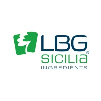

LGB è un'azienda di Ragusa che ha deciso di mettere il rispetto per l'ambiente al centro del proprio lavoro. Non si tratta solo di produrre beni di qualità, ma di farlo in modo che il territorio siciliano e il pianeta non ne risentano.
Ecco i punti principali che rendono la loro produzione "buona" per l'ambiente:
Per far funzionare i macchinari, LBG non usa solo l'elettricità tradizionale.

LBG sceglie con cura cosa usare per i suoi prodotti:
Anche le scatole e le confezioni sono pensate per la natura. LBG usa materiali che i clienti possono facilmente riciclare a casa, evitando la plastica superflua.
In sintesi, LBG a Ragusa dimostra che si può essere un'azienda di successo rispettando la natura. Il loro obiettivo è continuare a migliorare per lasciare un mondo più pulito alle future generazioni.